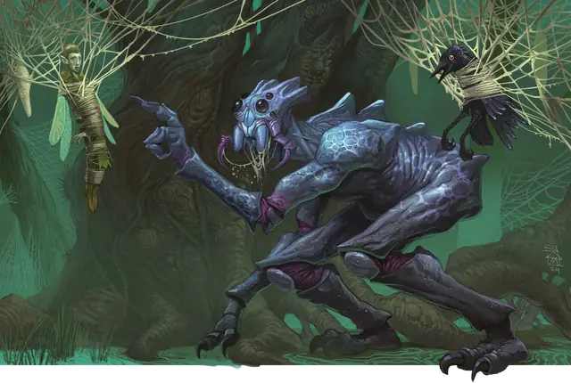

Эттеркап
Ettercap
Среднее Чудовище, Нейтральное Злое

Класс Защиты 13 Инициатива +2 (12)
Хиты 44 (8к8 + 8)
Скорость 30 футов, Лазания 30 футов
| мод | спас | ||
|---|---|---|---|
| СИЛ | 14 | +2 | +2 |
| ЛОВ | 15 | +2 | +2 |
| ТЕЛ | 13 | +1 | +1 |
| мод | спас | ||
|---|---|---|---|
| ИНТ | 7 | −2 | −2 |
| МДР | 12 | +1 | +1 |
| ХАР | 8 | −1 | −1 |
Чувства Тёмное зрение 60 футов, пассивное Восприятие 13
Языки нет
Опасность 2 (450 опыта; БВ +2)
Особенности
Паучье лазание. Эттеркап может лазать по сложным поверхностям, включая потолки, без совершения проверок характеристик.
Хождение по паутине. Эттеркап игнорирует ограничения перемещения, вызванные паутиной, и знает точное местоположение всех других существ, находящихся в контакте с той же паутиной.
Действия
Мультиатака. Эттеркап совершает одну атаку Укусом и одну атаку Когтями.
Укус. Бросок рукопашной атаки: +4, досягаемость 5 фт. Попадание: 5 (1к6 + 2) Колющего урона плюс 2 (1к4) урона Ядом, и цель становится Отравленной до начала следующего хода эттеркапа.
Когти. Бросок рукопашной атаки: +4, досягаемость 5 фт. Попадание: 7 (2к4 + 2) Рубящего урона.
Нить паутины (Перезарядка 5–6). Спасбросок Ловкости: Сл 12, одно видимое эттеркапом существо Большого размера или меньше в 30 футах. Провал: Цель становится Опутанной, пока паутина не уничтожена (КЗ 10; Хиты 5; Уязвимость к урону Огнём; Иммунитет к Дробящему и Психическому урону и урону Ядом).
Бонусные действия
Подтягивание. Эттеркап подтягивает одно Опутанное существо в пределах 30 футов от себя по прямой к себе на 25 футов.
Бонус мастерства +2
Среда обитания Леса
Сокровища Инструментальные
Эттеркап
Ядовитый арахнид-похититель
Паукоподобные охотники, эттеркапы таятся в лесных чащобах и высматривают добычу, чтобы утащить её в свои затянутые паутиной логова. У этих хищных созданий паучьи черты и сутулые двуногие тела; а известны они ядовитыми укусами и способностью выстреливать опутывающей жертву паутиной. Нередко эттеркапы охотятся малыми группами вместе с гигантскими пауками и роями обычных.
Часто эттеркапы опустошают угодья своей неумеренной охотой. Если их не сдерживать, они могут затянуть паутиной целые леса, усеяв их коконами с остатками былых трапез, — и это неизбежно приводит к столкновениям с Феями. Злобные эттеркапы нарочно преследуют и терзают фей, предпочитая тех что помельче, таких как пикси и спрайтов. Прочих разумных существ они редко пожирают сразу: им больше по нраву держать пленников в коконах и запугивать их днями напролёт.
Эттеркапы сторонятся огня: он слишком быстро пожирает паутину и сухие деревья, среди которых они селятся.